전자계산기기능사 (2012-02-12 기출문제)
1과목: 전기전자공학
1. 정류기의 평활회로는 어느것을 이용하는가?
- 저항 감쇄기
- 대역 여파기
- 고역 여파기
- 저역 여파기
(정답률: 67%)

2. 연산 증폭기의 입력 오프셋 전압에 대한 설명으로 가장 적합한것은?
- 출력전압과 입력전압이 같게 될때의 증폭기 입력전압
- 차동 출력전압이 0[V]일때 두 입력단자에 흐르는 전류의 차
- 차동 출력전압이 무한대가 되도록 하기 위하여 입력단자 사이에 걸어주는 전압
- 차동 출력전압이 0[V]가 되도록 하기 위하여 입력단자 사이에 걸어주는 전압
(정답률: 61%)
3. 연산 증폭기의 응용회로가 아닌것은?
- 미분기
- 가산기
- 적분기
- 멀티플렉서
(정답률: 67%)
4. 그림과 같은 미분회로의 입력에 장방형과 e가 공급될때 출력 e0의 파형모양은?(단
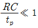
일 경우로 한다.)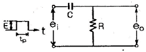
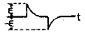
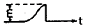
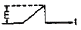
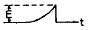
(정답률: 54%)
5. 전력에 대한 설명으로 옳은것은?
- 전류에 의해서 단위시간에 이루어지는 힘의 양을 말한다.
- 전류에 의해서 단위시간에 이루어지는 열량의 양을 말한다.
- 전류에 의해서 단위시간에 이루어지는 전하의 양을 말한다.
- 전류에 의해서 단위시간에 이루어지는 일의 양, 즉 일의 공률을 말한다.
(정답률: 51%)
6. 터널(tunnel)다이오드와 관계가 없는것은?
- 초고주파 발진
- 스위칭회로
- 에사키 다이오드
- 정류회로
(정답률: 41%)
7. 펄스폭이 0.2초, 반복주기가 0.5초일때 펄스의 반복 주파수는 몇[Hz]인가?
- 0.5[Hz]
- 1[Hz]
- 2[Hz]
- 4[Hz]
(정답률: 48%)
8. 반송주파수가 100[MHz]인 주파수변조에서 신호 주파수가 1[KHz], 최대 주파수 편이가 4[KHz]일때 변조지수는?
- 0.25
- 0.4
- 4
- 10
(정답률: 35%)
9. 다음 중 부궤환증폭의 특징으로 옳지 않은것은?
- 종합이득 향상
- 파형 찌그러짐 감소
- 주파수특성 향상
- 안정도 개선
(정답률: 56%)
10. 다음 회로에서 C2 가 방전중이면 각 TR의 on,off 상태는?(오류 신고가 접수된 문제입니다. 반드시 정답과 해설을 확인하시기 바랍니다.)
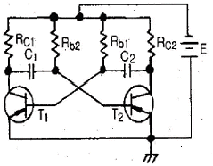
- T1 : off, T2 : on
- T1 , T2 동시 off
- T1 : on, T2 : off
- T1, T2 동시 on
(정답률: 42%)
2과목: 전자계산기구조
11. 3-주소 명령어의 설명으로 옳지 않은것은?
- 오퍼랜드부가 3개로 구성된다.
- 레지스터가 많이 필요하다.
- 원시 자료를 파괴하지 않는다.
- 스텍을 이용하여 연산한다.
(정답률: 55%)
12. EBCDIC 코드에 대한 설명으로 옳지 않은것은?
- 최대 128문자까지 표현할 수 있다.
- 4개의 존 비트(zone bit)를 가지고 있다.
- 4개의 디지트 비트(digit bit)를 가지고 있다.
- 대문자,소문자,특수문자 및 제어신호를 구분할 수 있다.
(정답률: 61%)
13. 전자계산기나 단말장치의 출력단에서 직류신호를 교류신호로 변환 하거나 또는 거꾸로 전송되어 온 교류신호를 직류신호로 변환해 주는 장치는?
- DSU
- MODEM
- BPS
- PCM
(정답률: 75%)
14. 다음중 2의 보수를 나타내는 산술 마이크로 동작은?
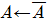
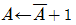
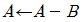
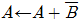
(정답률: 76%)
15. 출력장치에 해당하는 것은?
- 키보드
- 플로터
- 스캐너
- 바코드 판독기
(정답률: 81%)
16. 컴퓨터가 정상적인 인출단계를 실행하지 못하고 긴급한 상황에서 특별히 부과된 작업을 실행하는 것을 무엇이라고 하는가?
- 인터페이스
- 제어장치
- 인터럽트
- 버퍼
(정답률: 72%)
17. 특정위치의 비트(bit)를 시험하고 문자의 위치를 교환하는 경우에 이용되는 것은?
- 오버랩(overlap)
- 로테이트(rotate)
- 디코더(decoder)
- 무브(move)
(정답률: 59%)
18. 부호화된 2진 데이터를 10진의 문자나 기호로 다시 변환시키는 회로는?
- Encoder
- Decoder
- Counter
- Hoffer
(정답률: 67%)
19. 3초과 코드(Excess-3)중 사용하지 않는 것은?
- 0010
- 1100
- 1000
- 0110
(정답률: 69%)
20. 사칙연산,논리연산등 중간 결과를 기억하는 기능을 가지고 있는 연산장치의 중심 레지스터는?
- 누산기(accumulator)
- 데이터 레지스터(data register)
- 가산기(adder)
- 상태 레지스터(status register)
(정답률: 71%)
21. 다음에서 설명하고 있는 디스플레이 장치는?
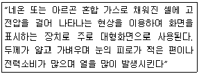
- 차세대 디스플레이(OLED)
- LCD 디스플레이(Liquid crystal display)
- 플라즈마 디스플레이(plasma display)
- 전계 방출형 디스플레이(FED-field emission display)
(정답률: 76%)
22. 다음 진리표에 해당하는 논리식으로 옳은것은?
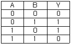
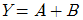
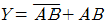
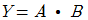
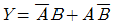
(정답률: 68%)
23. 2진수(110010101011)을 8진수와 16진수로 올바르게 변환한 것은?
- (6253)8 , (BAB)16
- (5253)8 , (BAB)16
- (6253)8 , (CAB)16
- (5253)8 , (CAB)16
(정답률: 74%)
24. 연산한 결과의 상태를 기록, 자리올림 및 오버플로우 발생등의 연산에 관계되는 상태와 인터럽트 신호까지 나타내어 주는 것은?
- 누산기
- 데이터 레지스터
- 가산기
- 상태 레지스터
(정답률: 58%)
25. 오퍼랜드부에 표현된 주소를 이용하여 실제 데이터가 기억된 기억장소에 직접 사상시킬수 있는 지정방식은?
- direct addressing
- indirect addressing
- immediate addressing
- register addressing
(정답률: 53%)
26. 직렬전송에 대한 것으로 옳지 않은것은?
- 하나의 통신회선을 사용하여 한 비트씩 순차적으로 전송하는 방식이다.
- 하나의 문자를 구성하는 비트별로 각각 통신회선을 따로 두어 한꺼번에 전송하는 방식이다.
- 원거리 전송인 경우에는 통신 회선이 한 개만 필요하므로 경제적이다.
- 병렬전송에 비하여 데이터 전송속도가 느리다.
(정답률: 51%)
27. 플립플롭을 여러개 종속 접속하여 펄스를 하나씩 공급할때 마다 순차적으로 다음 플립플롭에 데이터가 전송되도록 만들어진 레지스터는?
- 기억 레지스터(buffer register)
- 주소 레지스터(address register)
- 시프트 레지스터(shift register)
- 명령 레지스터(instruction register)
(정답률: 68%)
28. 2진수 (1100)2 의 2의 보수는?
- 0100
- 1100
- 0101
- 1001
(정답률: 70%)
29. 기억장치에 있는 명령어를 해독하여 실행하는것은?
- CPU
- 메모리
- I/O 장치
- 레지스터
(정답률: 57%)
30. 입출력 인터페이스에서 오류검사를 위해 짝수 패리티 비트를 채용하여 짝수 패리티 생성 회로에 필요한 논리 게이트를 2개만 사용하려 한다. 이 논리 게이트는?
- AND
- NAND
- NOR
- XOR
(정답률: 47%)
3과목: 프로그래밍일반
31. 저급 언어에 대한 설명으로 틀린것은?
- 하드웨어를 직접 제어할 수 있어서 전자계산기 측면에서 볼때 처리가 쉽고 속도가 빠르다.
- 2진수 체제로 이루어진 언어로 전자계산기가 직접 이해할 수 있는 형태의 언어이다.
- 프로그램 작성 및 수정이 어렵다.
- 기종에 관계없이 사용할 수 있어 호환성이 좋다.
(정답률: 54%)
32. 프로그래밍 작업시 문서화의 목적과 거리가 먼것은?
- 개발과정에서의 추가 및 변경에 따르는 혼란을 감소시키기 위해서이다.
- 프로그램의 개발 목적 및 과정을 표준화 하여 효율적인 작업이 되도록 한다.
- 프로그램의 활용을 쉽게 한다.
- 프로그래밍 작업시 요식적 행위의 목적을 달성하기 위해서이다.
(정답률: 73%)
33. C언어의 기억클래스의 종류가 아닌것은?
- 정적 변수
- 자동 변수
- 레지스터 변수
- 내부 변수
(정답률: 59%)
34. 프로그램이 수행되는 동안 변하지 않는 값을 의미하는것은?
- Constant
- Pointer
- Comment
- Variable
(정답률: 57%)
35. 운영체제의 목적과 거리가 먼것은?
- 신뢰도(reliability)의 향상
- 처리능력(throughput)의 향상
- 응답시간(turn around time)의 단축
- 코딩(coding)작업의 용이
(정답률: 68%)
36. 프로그램의 실행과정으로 옳은것은?
- 원시 프로그램-목적 프로그램-로드 모듈-실행
- 로드 모듈-목적 프로그램-원시 프로그램-실행
- 원시 프로그램-로드 모듈-목적 프로그램-실행
- 목적 프로그램-원시 프로그램-로드 모듈-실행
(정답률: 62%)
37. 프로그램 작성시 플로우차트를 작성하는 이유로 거리가 먼것은?
- 프로그램을 나누어 작성할 때 대화의 수단이 된다.
- 프로그램의 수정을 용이하게 한다.
- 에러발생시 책임구분을 명확히 한다.
- 논리적인 단계를 쉽게 이해할 수 있다.
(정답률: 54%)
38. 운영체제의 기능이 아닌것은?
- 프로세서,기억장치,입/출력장치, 파일 및 정보등의 자원관리.
- 시스템의 각종 하드웨어와 네트워크에 대한 관리.
- 원시 프로그램에 대한 목적 프로그램 생성.
- 자원의 스케쥴링 기능 제공.
(정답률: 69%)
39. C언어에서 사용되는 문자열 출력함수는?
- putchar( )
- prints( )
- printchar( )
- puts( )
(정답률: 75%)
40. 언어번역 프로그램에 해당하지 않는것은?
- 어셈블러
- 로더
- 컴파일러
- 인터프리터
(정답률: 77%)
4과목: 디지털공학
41. 전원을 끄면 그 내용이 지워지는 메모리는?
- RAM
- ROM
- PROM
- EPROM
(정답률: 69%)
42. 입력 A가 01101100이고 B가 11100101일때 ALU에서 AND연산이 이루어졌다면 출력결과는?
- 00100101
- 01101101
- 01100100
- 01111100
(정답률: 75%)
43. 일반적으로 어떤 데이터의 일시적인 보존이나 디지털 신호의 지연작용등의 목적으로 많이 쓰이는 플립플롭은?
- RS 플립플롭
- JK 플립플롭
- D 플립플롭
- T 플립플롭
(정답률: 67%)
44. 디지털 신호를 아날로그 신호로 바꿔주는것은?
- A/D 변환기
- D/A 변환기
- 해독기(Decoder)
- 비교기(Comparator)
(정답률: 88%)
45. 리플 계수기(ripple counter)의 설명으로 틀린것은?
- 회로가 간단하다.
- 동작시간이 길다.
- 동기형 계수기이다.
- 앞단의 플립플롭 출력 Q가 다음 단 플립플롭의 클럭 입력 CLK로 연결된다.
(정답률: 54%)
46. 논리식을 최소화 시키는데 간편한 방법으로 진리표를 그림 모양으로 나타낸 것은?
- 카르노 도
- 드 모르간 도
- 비트 도
- 클리어 도
(정답률: 77%)
47. JK 플립플롭의 두 입력이 J=1, K=1 일때 출력
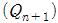
의 상태는?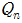
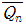
- 0
- 1
(정답률: 72%)
48. 불대수를 사용하는 목적으로 틀린것은?
- 디지털 회로의 해석을 쉽게 한다.
- 같은 기능의 간단한 회로를 복잡한 다른 회로로 표시한다.
- 변수 사이의 진리표 관계를 대수형식으로 표시한다.
- 논리도의 입출력 관계를 표시한다.
(정답률: 63%)
49. 여러개의 플립플롭이 접속될 경우, 계수 입력에 가해진 시간 펄스의 효과가 가장 뒤에 접속된 플립플롭에 전달 되려면 한 개의 플립플롭에서 일어나는 시간 지연이 생긴다. 이러한 문제를 해결하기 위해 만든 계수기는?
- 상향 계수기
- 하향 계수기
- 동기형 계수기
- 직렬 계수기
(정답률: 72%)
50. A=1, B=0, C=1 일때 논리식의 값이 0 이 되는것은?
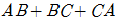
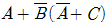
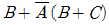
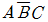
(정답률: 59%)
51. 한 개의 선으로 정보를 받아들여 n개의 선택선에 의해 개의 출력중 하나를 선택하여 출력하는 회로로 Enable입력을 가진 디코더와 등가인 회로는?
- 멀티플렉서
- 디멀티플렉서
- 비교기
- 해독기
(정답률: 53%)
52. 디코더는 일반적으로 무슨 회로의 집합인가?
- OR + AND
- NOT + AND
- AND + NOR
- NOR + NOT
(정답률: 49%)
53. 플립플롭을 일반적으로 무엇이라고 하는가?
- 시프트 레지스터
- 쌍안정 멀티바이브레이터
- 단안정 멀티바이브레이터
- 비안정 멀티바이브레이터
(정답률: 68%)
54. 레지스터의 사용에 대한 설명으로 틀린것은?
- 출력장치에 정보를 전송하기 위해 일시 기억하는 경우
- 사칙연산장치의 입력부분에 장치하여 데이터를 일시 기억하는 경우
- 기억장치등으로부터 이송된 정보를 일시적으로 기억시켜 두는 경우
- 일시 저장된 정보 내용을 영구히 고정시키는 경우
(정답률: 69%)
55. 2진수 10110을 그레이코드로 변환하면?
- 01001
- 11011
- 11101
- 10110
(정답률: 68%)
56. 컴퓨터를 포함한 디지털 시스템에서 여러가지 연산동작을 위하여 1비트 이상의 2진 정보를 임시로 저장하기 위해 사용하는 기억장치는?
- 가산기
- 감산기
- 레지스터
- 해독기
(정답률: 65%)
57. 다음 논리회로의 논리식은?
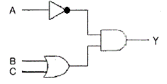
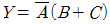
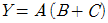
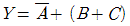
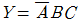
(정답률: 64%)
58. 다음 레지스터 마이크로 명령에 대한 설명으로 옳은것은?
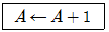
- A 레지스터의 어드레스를 1 증가시킨 레지스터의 데이터값을 전송하기
- A 레지스터의 어드레스를 1 증가시키고 어드레스를 A 레지스터에 저장하기
- A 레지스터의 데이터값을 1 증가시키고 A 레지스터에 저장하기
- A 레지스터의 데이터값을 1 증가시키고 A+! 레지스터에 저장하기
(정답률: 58%)
59. 인버터(Inverter)회로라고 부르는것은?
- 부정(NOT) 회로
- 논리합(OR) 회로
- 논리곱(AND) 회로
- 배타적(EX-OR)회로
(정답률: 48%)
60. 전감산기의 입력과 출력의 갯수는?
- 입력 2 출력 2
- 입력 3 출력 2
- 입력 2 출력 3
- 입력 3 출력 3
(정답률: 61%)